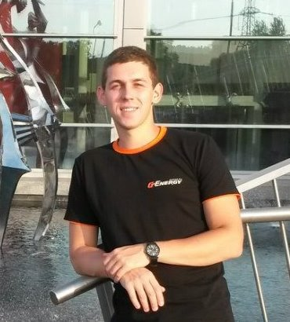

Contact information
- E-mail: ivanov-i.s@mail.ru
- Phone: +375293843494

The main goal is get a new interested experience, knowledge and professional skills.
As an engineer I always ready for different challenges and do my best for solving tasks.
document.querySelector("#horizPhoneButton").addEventListener('click',function(){
let screen = document.querySelector("#horizPhoneScreen");
if (screen.classList.value.indexOf('turnOff')<0)
screen.classList.add('turnOff');
else screen.classList.remove('turnOff');
})
Graduated in 2016 from the Francisk Skorina Gomel State University with the Software Engineer qualification in the Information Technology Software specialty.
Completed the Pre-Intermediate (A2) course.